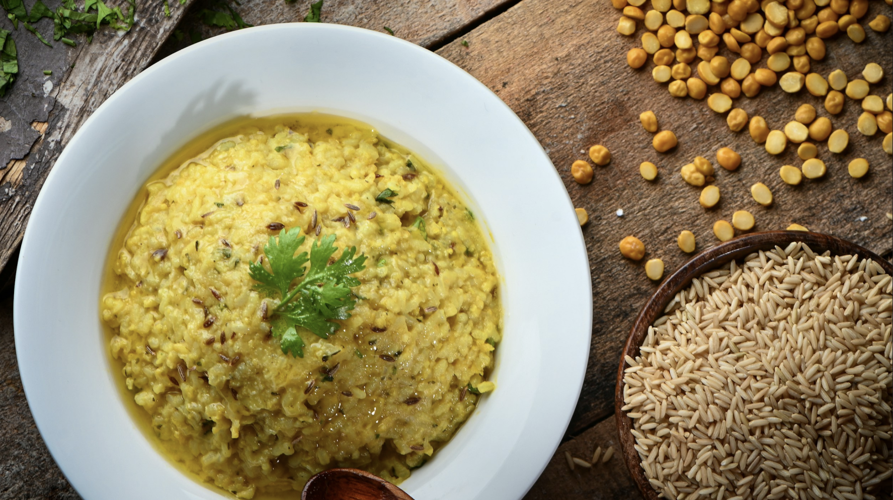

One-Pot Veg Khichdi

Ingredients
- 1 cup rice
- 1/2 cup moong dal
- 1 small carrot (chopped)
- 1 potato (diced)
- 1/2 cup green peas
- 1 onion (chopped)
- 2 tomatoes (chopped)
- 1 inch ginger (grated)
- 3-4 garlic cloves (minced)
- 2 tbsp ghee or oil
- 1 tsp cumin seeds
- 1 tsp turmeric powder
- Salt to taste
- 4 cups water
Instructions
- Wash rice and dal together until water runs clear. Soak for 20 minutes.
- Heat ghee in a pressure cooker, add cumin seeds and let them splutter.
- Add onions, ginger, and garlic. Sauté until onions are translucent.
- Add vegetables and spices. Cook for 2-3 minutes.
- Drain rice and dal, add to the cooker with water and salt.
- Pressure cook for 2 whistles or about 15 minutes.
- Let pressure release naturally. Fluff with a fork and serve hot.
Chef's Tips
- Add more water for a softer consistency
- Top with ghee and crispy fried onions for extra flavor
- Serve with papad and pickle for a complete meal
- Can be made with any seasonal vegetables